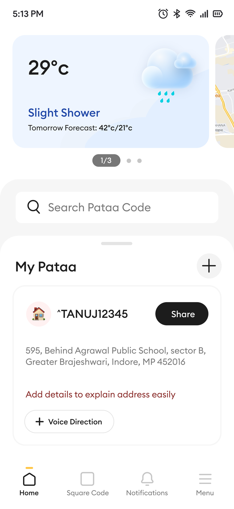

Pataa Navigations · 2022 redesign · Android + iOS
A trustable address
for the last mile.
In most of India a written address points at an area, not a place. Pataa gives any spot a short, memorable code that resolves to a single 3 by 3 metre block, then lets a person explain the last stretch in their own voice.


Real screens from the live app, on Android and iOS. Shown whole, nothing cropped.
Small pieces of the same app


A written address gets a rider to your area. Pataa gets them to your door, without the phone call. It does it three ways.
The address is where the journey starts, not where it ends.
Two people feel this on every order. The person who bought something and still gets the call. And the rider making that call forty times a shift, on a bike, in the rain, losing a minute to every vague address.
I’m near your area. Where exactly are you?
Pataa already existed and was growing before we joined. It had passed 3 million downloads by August 2021. We did not invent Pataa, the ShortCode, or the block system. Our job was to redesign the journeys inside it so a first-time user could trust them.
We rewrote the brief we were handed.
We ran six one-to-one interviews with delivery agents, logistics staff, and everyday travellers, then read every credible source we could find. The obvious brief was to make the address shorter, like a PIN code.
The research said that was not enough. A shorter code still leaves the last twenty metres unsolved, and riders navigate by landmarks and cues, not coordinates. So we changed the problem.
Every address has two sides.
An address is created by one person and arrived at by another. A second thing, how comfortable each is with a phone, decides what the design has to carry.
 The finder
The finderNeeds the exact door in one look. A landmark he knows, a route he can start without calling, forty drops a shift with one hand on the bike.
 The sender
The senderNeeds one precise thing to share that a stranger can act on without her narrating the way. Orders often, hosts, lives inside maps and chat.
 Both sides
Both sidesNeeds to hear the way in his own language. First smartphone, reads slowly, weak signal at home, big obvious buttons, something that works offline.
Build something Rajesh can fly through and you get a faster app. Build something Mohan can use at all and you are pushed into voice, more than one language, and buttons large enough to hit without aiming. Each choice, made for the person with the least, quietly made the app better for the two with more.
Priorities first, then a lot of bad ideas on purpose.
We sorted the whole surface into four priority bands, so the team argued about the ladder once instead of about every screen.
We ran Crazy Eights, including one round of deliberately terrible ideas to break the pull of the first decent one. Then we dot-voted every idea on three axes. We skipped a separate low-fidelity phase because the sketches were the low fidelity, went straight to mid-fidelity in Figma, and tested twice.
- Feasible to build
- Wanted by users
- Worth building for the business
The route preview felt a bit cluttered.A user in testing. So we pulled it back. Six moderated sessions, matched to the personas.
A handle that is also a coordinate.
Seven to eleven characters, yours to choose, as easy to remember as a username. Underneath it is a precise geocode: one 3 by 3 metre block, out of the roughly fifty-seven trillion that tile the planet.

Three real screens from the create flow. Staged on purpose, so it never asks for everything at once. The add-details step is a genuine app screenshot.
The part that removes the phone call.
This is the piece I cared about most. A code lands you on the block. A person still needs the last few steps: which gate, which side, which landmark. So you record it once. A voice note, go straight from Treasure Island Mall, the blue gate is on your right. A photo of the entrance. A tagged landmark.
It plays back on a clean waveform, in English or Hindi, or you type it and the app reads it aloud to whoever is on the way.
Captured once, it travels with the code to everyone you share it with. So “call me when you are close” happens zero times, instead of every time.

For a place that is genuinely hard to describe, the entrance in a picture beats any amount of text. Up to three real photos ride along with the code, so the finder recognises the door before they reach it.
A voice-guided navigation option would make this a game-changer for drivers.One driver, in a moderated session. He said out loud the bet we had already made.
A state that is not allowed to lie.
Live-location sharing is the one feature where a quiet, ambiguous design is worse than an ugly one. If the app is broadcasting where you are, it has to say so loudly, and it has to be one tap from off.
So while it is on, it is loud. A maroon card sits on the home screen and says exactly what is true: live location active, sharing now, with this person, for this long. A timer counts down in front of you, and the tap that turns it off is right there, not buried three menus deep.
Sharing where you are is not something a design should ever be quiet or dishonest about.Neel Tengariya
Pataa is where I first treated honesty as a design material, the same as colour or type or space. It became the centre of how I work now.
Everything built around the code.
The ShortCode is the anchor. The rest of the app is what you do with it once you have one.



A real app, and a real redesign.
I helped redesign the journeys people use inside it. I am not going to hand you a wall of percentages I never measured. What I can tell you is that the work was research-driven end to end. Evidence rewrote the brief. We designed for the hardest user first. We tested before we committed. In sessions, users said the geotagging felt precise and helpful.